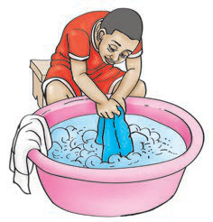
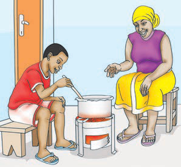

3

He is .
4

He is .
5

She is .
6

He is .
7

She is .
8

She is .
Choose an action from each dropdown. You can also drag an action to a picture's answer field, or select a chip and press Enter on the field.